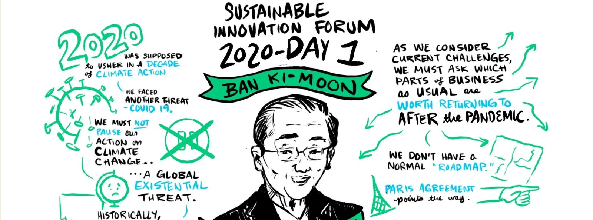

Brand systems that are beautiful and accessible, with a bit of whimsy.
A rebrand followed by the strongest growth month the business ever had. A 133 card visual system with a working sense of humor. Contrast checked, keyboard friendly, and this February the work hung in the Albuquerque airport.

Where the work has been
- 8works, an Oliver Wyman company
- Salesforce
- National Audubon Society
- New Mexico True Certified
- Albuquerque airport, February 2026
Featured design work
Systems rather than one offs, and each one held up under use.

A rebrand in March, the biggest growth month in April
A visual identity, a positioning line, a templated content system and a matching website, shipped in March. The strongest growth month the business has had followed in April.
read →
Belle of the Bot
A 133 card visual system with a working sense of humor. One palette, 67 character expressions assigned by rule, and about 110 icons that all belong to the same hand.
visit the site →
Chaney Family Dentistry
A father and son practice, rebranded around a mark drawn half above ground and half below. Seven colours, four drawn portraits, and print that had to work at the front desk.
read →More work
The rest of the deck, ordered for a design reviewer.

CambiumPak brand system
A mark, a palette, five invented certification marks and a rulebook, in two days. Built to prove the system holds before anything is printed.

Website reimagining
A versioned production CSS system, v2.20, that cut force override declarations from roughly 200 to a handful. Design systems are maintenance work as much as they are taste.

How a sleep apnea machine works
Accessibility of understanding, drawn. A cutaway you can tap through, in a fixed sequence, with one colour legend holding the set together.

Choose Democracy
One drawn style held steady since 2021 across an interactive book, four animations and a website. Consistency is a design deliverable.

Product deck generator
A brand system enforced at the moment of creation instead of caught in review, with a 411 item badge library resolved automatically.

Boards for a national conference
Seven panellists drawn live with portrait likenesses, names, titles and attributed quotes, every board inside Audubon’s own palette. Brand compliance at speed, with no undo.

Drive the 505
Interactive SVG, hand built, with a city grid you can explore. Product design for someone anxious, which changes every decision on the page.

A studio dashboard for my art business
Interface design where the hardest decision was editorial: every stat names its comparison window and its asterisk, so the page is trusted rather than impressive.

Bookspot
Eight interviews, ten versions of one flow, more than 40 screens and a clickable prototype. The research is the reason the flow is short.

Passage
My concept, my UI, and every illustration in it. Designing for someone at the worst point of their year is a discipline of restraint.

Aristotle’s Poetics, on one sheet
Drawn in Illustrator and shipped as SVG, so you can zoom into any panel and nothing softens. Information design that stays sharp at any size.

Futures Lab, drawn live and then animated
Hand lettered animation held to a corporate palette from the first frame to the last. Three clients, three palettes, one hand.

Graphic facilitation at 8works
Six scribes for one forum, each with its own palette and its own composition, all recognisably one hand. Drawn in Procreate over Zoom, then cleaned and coloured for publication.
open to marketing operations, analytics and martech roles
Let’s talk.
A design portfolio that claims accessibility should be auditable, so this one is. Every text and background pair on this page is contrast checked, every image carries alt text, and you can reach every card and every menu item with a keyboard alone.
Inspect it. Then let us talk about what you need built.